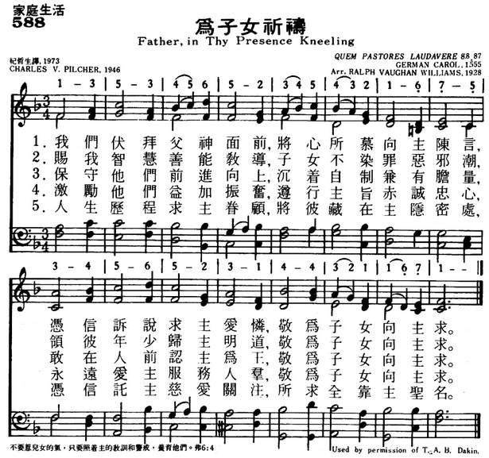
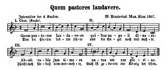

|
|
|
|
Father, in Thy presence kneeling, |
588为子女祈祷
1.我们伏拜父神面前，将心所慕向主陈言，
凭信诉说求主爱怜，敬为子女向主求。 2，赐我智慧善能教导，子女不染罪恶邪潮， 领彼年少归主明道，敬为子女向主求。 3.保守他们前进向上，沉着自制兼有胆量， 敢在人前认主为王，敬为子女向主求。 4.激励他们益加振奋，遵行主旨赤诚忠心， 永远爱主服务人群，敬为子女向主求。 5.人生历程求主眷顾，将彼藏在主隐密处， 凭信托主慈爱关注，所求全靠主圣名。 |
|
https://www.mred365.cn/szxg/7591.html
 https://hymnary.org/hymn/HEUB1957/page/347 QUEM PASTORES LAUDAVERE
|
|
|
|
|


https://youtu.be/C92h9boS4TM - Quem Pastores, by Michael Praetorius
(1571-1621)
https://youtu.be/jgROb3p_WKc
| Text: | Father, in Your presence kneeling |
| Author: | Charles Venn Pilcher, 1879-1961 |
| Short Name: | Charles Venn Pilcher |
| Full Name: | Pilcher, Charles Venn, 1879-1961 |
| Birth Year: | 1879 |
| Death Year: | 1961 |
Pilcher, Charles Venn. (Oxford, June 4, 1879--July 4, 1961, Sydney, Australia). Anglican. Grandnephew of Charlotte Elliott. Hertford College, Oxford, B.A., 1902; M.A., 1905; B.D., 1909; D.D., 1921. Curacies at Birmingham, 1903-1905; St. James, Toronto, 1910-1916; taught theology at Auckland Castle, England, 1905-1906, and at Wycliffe College, Toronto, 1916-1936. Elected coadjutor bishop of Sydney, Australia, at the instance of a former Wycliffe colleague, Archbishop Mowll. He composed hymn tunes and other music, and long played bass clarinet in the Toronto Symphony Orchestra. Also, he translated and published much devotional material from Iceland, notably Iceland Christian Classics (1950). These side interests, like his hymn writing, merely served to heighten and deepen his effectiveness and influence as a teacher.
| Tune: | QUEM PASTORES |
Tune Information
| Title: | QUEM PASTORES |
| Meter: | 8.8.8.7 |
| Incipit: | 13534 56523 45432 |
| Key: | F Major |
| Source: | 14th Century Carol |
| Copyright: | Public Domain |
| QUEM PASTORES LAUDAVERE |
| Text: | Father, in Your Mysterious Presence |
| Author: | Samuel Johnson |
| Tune: | DONNE SECOURS |
| Composer (attributed to): | Louis Bourgeois |
Quempas ("He whom the shepherds praised") Wikipedia
| "Quempas" | |
|---|---|
| Christmas carol | |
|
 |
|
| English | "He whom the shepherds praised" |
| Full title | "Quem pastores laudavere" |
| Genre | Christmas carol |
| Language | Latin |
{kind=link}
"Quempas" is the shortened title of the Latin Christmas carol "Quem pastores laudavere" ("He whom the shepherds praised"), popular in Germany in the sixteenth century, and used as a generic term for Christmas songs in a German caroling tradition.[1] Quempas is the name of an early tradition of singing carols, and the name of a collection of old carols by Bärenreiter, first published in 1930.
History[edit]
The earliest sources of the carol are from the fifteenth century, including the Hohenfurth Monastery Ms. 28 (1410). Many versions exist from the sixteenth century. The most famous version is from Michael Praetorius, Musae Sioniae (1607), with the German text "Den die Hirten lobeten sehre."[2]
Students of the Latin school maintained a tradition of "Quempas singen," earning alms by going from house to house, singing carols.[1]
In order to revive the Quempas singing tradition and fight the sentimentality of 19th-century Christmas carols, Wilhelm Thomas and Konrad Ameln published a collection of old carols under the title Quempas, sometimes called Quempas-Heft, printed by Bärenreiter.[3][4] The first collection contained 39 songs with melodies. It was followed by choral editions, and a greater selection including 20th-century carols in 1962.[3] Der neue Quempas, a collection of 41 songs, was published in 2012.[3]